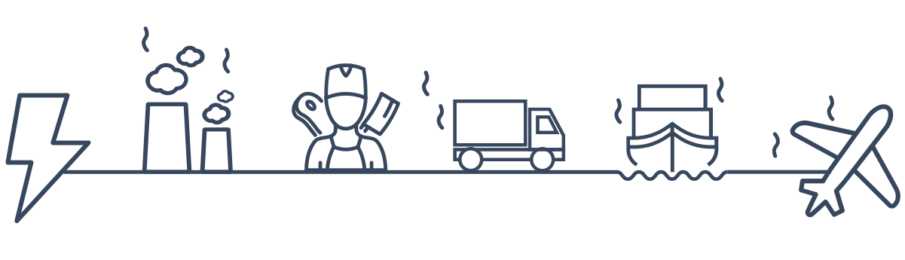

“In the last 50 years, global meat production has
quadrupled well - and the trend is rising. The consequences range
from climate change and species extinction to hunger and water
shortages.” - NABU
(Nature Conservation Union Germany)


Since the UN Climate Change Conference in 2010, efforts have been
made to limit global warming caused by greenhouse gases to only two
degrees Celsius by the end of the century compared to the
pre-industrial age. In the Paris Agreement of 2015, two degrees
remains the goal, but the aim is to limit warming to only 1.5
degrees. Human activities have so far led to a global temperature
increase of 1.0 degrees Celsius.
If no drastic measures will soon be taken, the temperature could
already rise by 1.5 to 7.8 degrees Celsius by the end of the
century, depending on the scenario.
If the earth warms up by more than two degrees,
researchers believe that drastic and irreversible
environmental changes will occur – heatwaves, droughts, floods,
natural disasters and the extinction of species.

Decisive action by all countries is required, as global emissions of greenhouse gases must be drastically reduced: In order not to exceed 1.5 degrees Celsius, CO2 emissions must be reduced by at least 40 percent by 2030 compared to 2010 levels. By 2050, we have to be climate neutral.
And each of us can contribute to achieving this goal by reducing our personal C02 emissions.

In short: intensive animal husbandry leads to CO2 emissions.
The whole thing is a concatenation of many factors. Animals need a
lot of food until they reach slaughterable age. The forage crops in
turn need soil to grow. These soils are originally pastureland and
are converted into arable land by clearing. In the process, carbon
in form of CO2 is released into the air. Fertilizers are used to
make the plants grow faster. These chemicals consist among other
things of animal excrements and can produce emissions in the form of
laughing gas. This may happen if the fertilizer is not used
carefully. Some animal species even produce emissions in the form of
methane directly by excreting it themselves, thus polluting the
environment.
Did you know that methane is 25 times more harmful and nitrous oxide
350 times more harmful than CO2?

Furthermore, the stables of the animals need energy to be heated or
lit and the meat has to be processed. Depending on the type of electricity
(green electricity or not) this point is more climate-friendly or
more harmful. Another factor
that is relevant when it comes to CO2 emissions is the transport of
animals, meat and animal products. These are released into the air
in the form of exhaust gases.

The rainforest also has a particularly important function here. It is also called the green lung of the planet and has a great influence on the global climate. It ensures that CO2 is converted into oxygen through photosynthesis. However, if more and more rainforest is cleared for fodder cultivation and animal grazing, it can decompose less CO2 and more CO2 rises into the atmosphere that was previously bound in the forests. So, you see, it all adds up to a lot...
We have focused on the four animal species most often mentioned in statistics and consumed around the world. To make the visualization more understandable, we have formed superordinate groups of age and species, so that we have come to the following pictograms:


We collected some easy tips how you can change your lifestyle and at
the same time make the world a better place. You can really make a
difference!